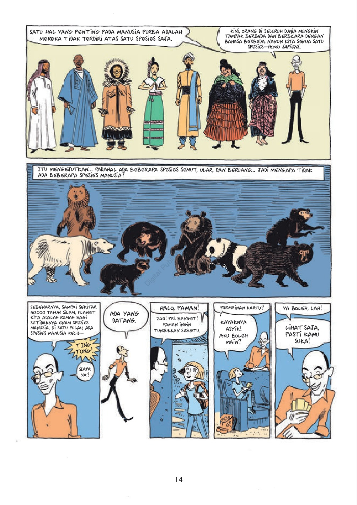
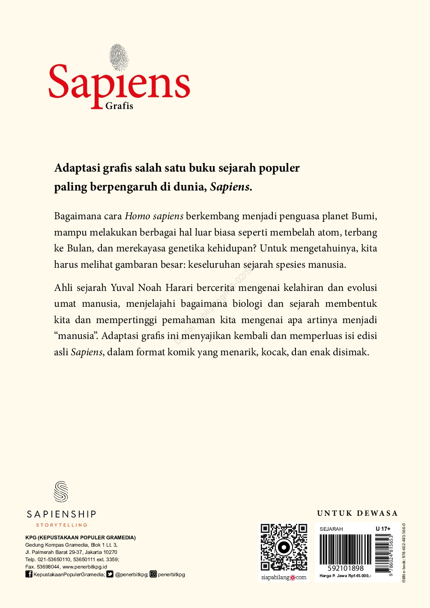

Buku Sapiens Grafis, yang ditulis oleh Yuval Noah Harari ini telah direkomendasikan
oleh banyak orang serta buku ini layak berjajar di rak buku “Best Seller”. Seberapa
menariknya buku sejarah ini sampai banyak orang yang membicarakannya?
Buku Sapiens Grafis merupakan bentuk adaptasi yang epik dari buku
terlaris Yuval Noah Harari jadi seri novel grafis. Buku ini penuh dengan kecerdasan,
humor, rujukan budaya pop serta ilustrasi yang penuh warna. Harari (selaku rekan penulis)
sudah bekerja sama dengan seniman komik populer bernama David Vandermeulen (penulis bersama)
serta Daniel Casanave (Sebagai ilustrator). Ilustrasi memiliki peran penting dalam buku ini, yakni menggambarkan kembali cerita umat
manusia dengan metode yang menarik seluruh pembaca, baik orang dewasa maupun anak-anak.
Termasuk mereka yang umumnya tidak terbiasa untuk membaca buku sains dan sejarah.
Review Sapiens Grafis
Dalam seri ini, Yuval mengundang kita untuk menjelajahi sisi liar sebuah sejarah, ditemani
oleh beberapa tokoh besar yang memiliki kepribadian penjelajah dunia, semacam keponakannya
bernama Zoe, Profesor. Saraswati yang merupakan pakar hayati, Detektif Lopez yang tangguh;
serta pahlawan luar biasa bernama Dokter. Fiction.
Bersama-sama mereka pembaca akan diajak untuk memotong kebisingan dunia yang dibanjiri data,
serta memandang cerminan yang sangat besar: segala sejarah spesies manusia. Inti dari
penjelajahan mereka merupakan sebagian persoalan yang mengusik, seperti pertanyaan: gimana
kera yang tidak berarti jadi penguasa planet ini, sanggup membelah atom, terbang ke Bulan,
serta memanipulasi kode genetik kehidupan?
Jawaban dari pertanyaan itu bisa ditemukan dalam buku ini dengan konsep yang berbeda.
Memiliki dua seri, buku Sapiens Gravis jilid 1 dan 2 memiliki pembahasan yang masih
berhubungan. Berikut ini Review Sapiens Grafis yang bisa disimak agar semakin yakin untuk
membaca buku ini
1. Review Sapiens Grafis: Kelahiran Umat Manusia
Buku Sapiens Grafis adalah bentuk adaptasi grafis dari salah satu buku sejarah terkenal
yang sangat berpengaruh di dunia. Dalam buku ini menggambarkan bagaimana metode Homo
sapiens tumbuh jadi penguasa planet Bumi, sanggup melaksanakan bermacam perihal luar
biasa semacam membelah atom, terbang ke Bulan, serta merekayasa genetika kehidupan.
Buku Sapiens adaptasi grafis ini membuka ruang ingatan manusia tentang jejaknya sendiri,
jejak bukti diri yang barangkali sudah dibuang begitu saja dari memori ataupun enggan
buat diulik kembali. Perihal ini diakibatkan saat menekuni sejarah kerap kali
mempunyai kesan yang membosankan. Tetapi, buku ini seolah melawan jauh dari stereotip
tersebut.
Pakar sejarah Yuval Harari yang bekerjasama dengan David Vandermeulen sukses
mengonversikan edisi buku Sapiens aslinya supaya lebih ramah disimak melalui format
yang menarik, menggelitik, serta cerita yang sangat renyah. Pembaca menjadi lebih
gampang menguasai alur cerita kelahiran umat manusia dengan ilustrasi atraktif
bercorak buatan kartunis Daniel Casanave.
Isi Buku setebal 248 halaman ini dibagi dalam 4 bab dengan pokok ulasan yang berkaitan.
Cerita diawali dari terbentuknya Big Bang yang melatari seluruh asal- usul lahirnya
entitas. Bumi muncul sehabis rangkaian panjang proses fisika serta kimia, sebaliknya
lahirnya biologi disyarati dengan timbulnya organisme awal oleh molekul- molekul yang
berpadu membentuk struktur yang amat rumit.


Evolusi setelah itu mendesak lahirnya bermacam spesies, termasuk manusia. Kehidupan
berkelompok membuat manusia silih berhubungan, sehingga menciptakan bermacam budaya.
Sejarah setelah itu jadi bidang ilmu yang mempelajari pertumbuhan budaya serta
peradaban dimana kedua konteks ini berlangsung sangat lama serta terjalin secara
perlahan.
Penulis lulusan Universitas Oxford ini mengatakan, pada 50. 000 tahun yang lalu, ada
paling tidak 6 spesies manusia yang menghuni planet kecil ini, yakni Homo Erectus,
Homo Floresiensis, Homo Luzonensis, Homo Neanderthalensis, Homo Denisova, serta Homo
Sapiens. Sampai saat ini, cuma Sapiens yang merupakan makhluk pinggiran dari sabana
yang kemudian jadi salah satunya spesies manusia yang masih bertahan.
Buku Sapiens Grafis mengupas tuntas evolusi manusia dari era batu sampai abad ke- 21.
Pembaca akan menemukan jawaban atas pertanyaan, bagaimana manusia melaksanakan
persebaran? Kenapa terdapat perang di mana- mana? Serta, jadwal apa saja yang sudah
terjalin? Bahasanya ringan serta menarik untuk awam, tidak semacam buku- buku sejarah
lain yang bertele- tele. Walaupun data yang disajikan tidak sepadat novel Sapiens tipe
non- grafis, namun karya Harari serta kawan- kawannya ini lumayan menghapus
keingintahuan tentang masa lalu.
Terlebih, sebagai penerjemah, Damaring Tyas mengalih bahasakan buku ini dengan apik.
Membaca buku ini seperti menarik ulang waktu. Masing- masing lembarnya membawa pembaca
pada asal- usul dirinya sendiri serta proses menjadi manusia yang sepatutnya. Setelah
membaca buku ini, berpikirlah kembali, apakah kita telah lumayan pantas untuk
menyandang gelar “Sapiens” yang bijak?
Dalam seri ini, penulis mengajak kita buat mencari tahu proses gandum mengambil alih
dunia, bagaimana perkawinan yang bisa terjadi serta birokrat menghasilkan kerajaan
awal, hingga muncul perang, kelaparan, penyakit, serta ketidaksetaraan jadi bagian
dari keadaan manusia. Dalam jilid ini juga mengulas tentang asal-usul pertanian modern
yang dikisahkan lewat kejadian Elizabethan.
Pergantian dari nasib tumbuhan serta hewan peliharaan dilacak lewat kolom Daily
Business News. Dalam buku ini Pembaca juga bisa menemukan gagasan Thomas Jefferson,
Margaret Thatcher, serta John Lennon. Serta pembaca akan dibiarkan bingung dengan
pertanyaan, bagaimana bila 12. 000 tahun lalu, manusia jatuh ke dalam perangkap yang
tidak sempat berhasil dihindarinya?
Review Sapiens Grafis Volume 1 ini juga patut menampilkan ulasan tentang kemunculan
Homo sapiens di Bumi serta proses Sapiens berganti dari spesies biasa saja jadi
makhluk hidup dominan di dunia. Buku Volume 2 ini membicarakan metode pertanian,
selaku upaya Homo sapiens menopang populasinya yang terus menjadi membengkak, malah
menimbulkan imperium, hak kepunyaan, kesenjangan, dan bermacam penderitaan akibat
perang serta penyakit.
Selain itu juga ada angka, serta fiksi dalam menunjang peradaban yang kian lama kian
besar serta rumit. Pakar sejarah Yuval Noah Harari menceritakan tentang kelahiran
serta evolusi umat manusia dan menjelajahi proses biologi dan sejarah. Tidak jauh
berbeda dengan jilid 1, buku Sapiens Grafis jilid 2 ini juga memiliki pembahasan yang
sederhana.
Tentang Penulis Sapiens Grafis
Membahas suatu buku, kurang lengkap rasanya jika tidak membahas tentang penulisnya,
termasuk review Sapiens Grafis yang ditulis oleh sejarawan kondang, Yuval Noah Harari.
Professor Harari lahir di Haifa, dari Orang Tua asal Lebanon pada tahun 1976.
Dia menerima gelar Ph. D. dari Universitas Oxford pada tahun 2002. Saat di Oxford, Harari mulai berkenalan dengan karya-karya Jared Diamond. Bagi Harari salah
satu novel Jared Diamond bertajuk Guns, Germs and Steel membuat Harari memperoleh
pencerahan. Sehingga setelah itu tulisan-tulisan Harari banyak terbawa dengan pemikiran-
pemikiran Jared Diamond tersebut. Harari mulai diketahui dunia lewat bukunya yang sangat
laris tentang since terkenal bertajuk Sapiens: A Brief History of Humankind yang awal kali
terbit pada tahun 2014, setelah itu Homo Deus: A Brief History of Tomorrow yang terbit di
tahun 2016 dan 21 Lessons for the 21st Century (2018).